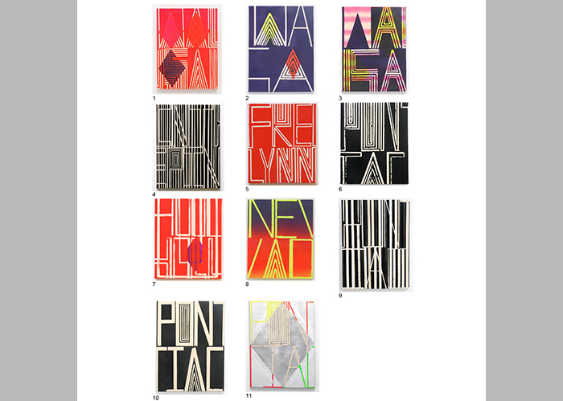

Cypher
July 10 – July 20, 2013
Opening: July 10, 6-9 PM
John Phillip Abbott
Katherine Bernhardt
Erling Klingenberg & Sirra Sigrun Sigurdardottir
David Matorin
Curated by Kari Adelaide and Max Razdow
Cypher is a term of polyphony; its definitions contradict each other while also indirectly hinting at one another, and its adoptions in language are many. The word can mean “a secret code of writing,” such as in a cryptogram, suggestive of an esoteric fullness as one might use a cypher to alternately hide or decipher linguistic content. It is also, paradoxically, a numerical element equal to zero, a “quantity of no importance,” revealing emptiness and non existence. Yet, in its mathematical application, the term can also mean any of the Arabic numbers. It is zero and it is all numbers, it is full of meaning, empty of meaning, and a holding place for meaning all at once. And while not yet in the dictionary, the cypher has also been adopted in rap music, as a term for a freestyle session. As a freestyle, the cypher seems cognizant of the counteractions of its definitions. It becomes a technique to bridge contradictions, evoking its content out of interchangeable occurrences of metaphor and likeness, finding license to form poetics out of a temporal nothingness.
The Sphinx’s inaugural show brings together four artists working from Albuquerque, to New York, to Morocco, to Iceland — presenting cyphers of their own, where meaning remains hidden from conscious utterance, yet blooms to reverberate beyond.
John Phillip Abbott’s recent paintings sample from words laden with mysterious memories. They are charged with sentiment and abstruseness. These works include mention of places briefly visited or glimpsed on maps (Wausau), cars (Pontiac) and even an old erstwhile baseball player (Fred Lynn). Their temporality has been etched onto the surface of Abbotts canvases and old t-shirts in a matrix of half spoken glyphs, which carry humanized time forth as glossolalia.
Katherine Bernhardt’s Magic Flying Carpets present stitches in time as well. These rugs, which she imports through her company “Magic Flying Carpets of The Berber Kingdom Of Morocco” are hand woven by craftspeople that she encounters and seeks out in her travels in Morocco. Like Abbott’s paintings, they bear along an ineffable energy that makes the quotidian object of the carpet vibrate with the feeling of the human, an experience that is not easy to come by now when confronting any object. Cryptic and personal, the rugs speak in a hum rather than a statement, and reengage the viewer with the mystic essence of their material, memory and form.
Erling Klingenberg and Sirra Sigrun Sigurdardottir collaboratively present a new clay sculpture hewn with the crucible of their bodies. Sigurdardottir and Klingenberg are the producers and the receivers of the work’s pleasure. They are simultaneously public and private, making marks on the sculpture yet leaving little behind. As a collaborative piece, completed in private ritual, we find only traces of enigmatic action, where robust traces on the surface confer with an infinite hole that “creates and destroys all.”
David Matorin’s iconic chisel, an extension of his ongoing investigation of the hermetic, is also concerned with reshaping. By working against the mire of the singular or elemental, the chisel allows “one” to be split into “many.” For The Sphinx, Matorin has re-investigated the chisel in an edition of poster-like prints, where text melds with iconic meaning, fracturing the completeness of the chisel to iterate itself into the unending through language. The cypher’s essence, perhaps, is in this ambulation toward multiplicity, where nothingness and fullness coalesce to become interchangeable. Thus, in the cypher’s wake a poetic space is opened, where reality might shift, and where that which stands might be broken.
Image courtesy of John Phillip Abbott, various paintings, 2013.
For more information, please contact The Sphinx at thesphinxnyc@gmail.com